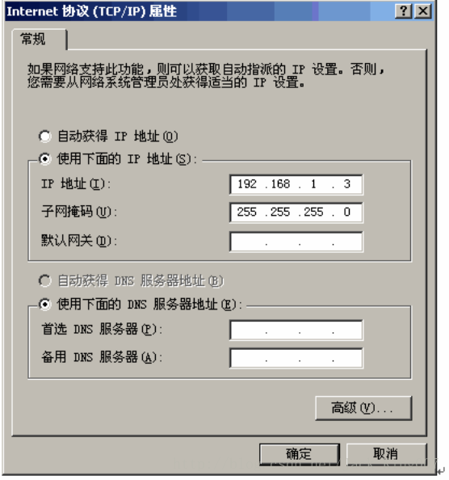
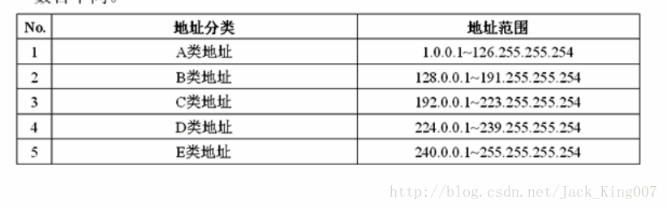
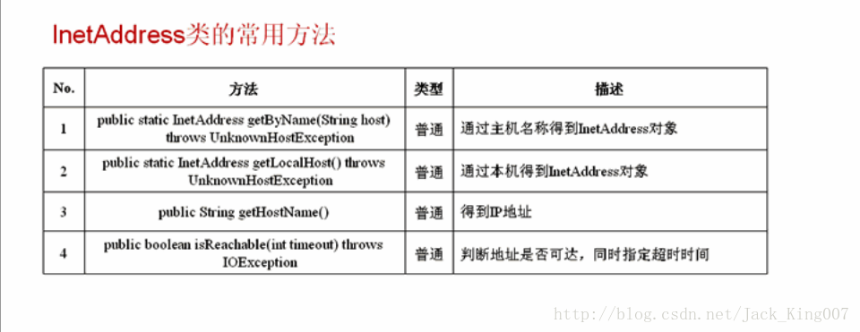

从java网络编程学起（1）
IP 与InetAddress
1了解IP地址的使用
IP介绍：在互联网上每一台计算机都有一个唯一标示自己的标记这个地址就是IP地址
在java中支持网络通讯程序的开发，主要提供了两种通讯协议
TCP协议和UDP协议
1.可靠的连接传输，使用第三方握手的方式完成通讯
2.不可靠的连接传输 传输的时候接收方不一定可以接到到
所有程序都在开发包里 java.net
IP地址表示
IP地址使用32位长度二进制的数据表示，一般在实际中看到的大部分IP地址都是十进制的数据形式表示
如果193.168.1.168
IP地址格式
IP地址=网络地址+主机地址
网络号：用于识别主机所在的网络
主机号：用于识别该网络中的主机
IP地址中存在的掩码功能就是区分网络号和主机号

IP地址分类 A类保留给了政府机构 B类分给了中等规模的公司C类分给有需要的人 D类用于主播E类用于实验

实际上可以用127.0.0.1作为本机地址或者用locahost也代表本机
2了解inetAddress类的使用
inetAddress类主要表示IP地址 这个类有两个子类 inet4Address inet6Address一个是IPV4
一个是IPV6随着网络主机越来越多 之后就发展为IPV6

实例
package KownClass ;
import java.net.InetAddress ;
public class FactoryDemo02{
public static void main(String args[]) throws Exception {// 所有异常抛出
InetAddress locAdd = null ;
InetAddress remAdd = null ;
locAdd = InetAddress.getLocalHost() ;// 得到本机
remAdd = InetAddress.getByName("http://www.mldnjava.cn/") ;
System.out.println("本机的IP地址：" + locAdd.getHostAddress()) ;
System.out.println("MLDNJAVA的IP地址：" + remAdd.getHostAddress()) ;
System.out.println("本机是否可达：" + locAdd.isReachable(5000)) ;
}
};